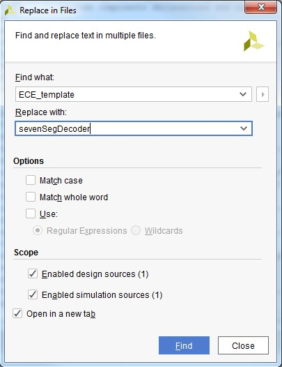
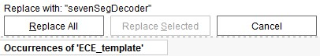
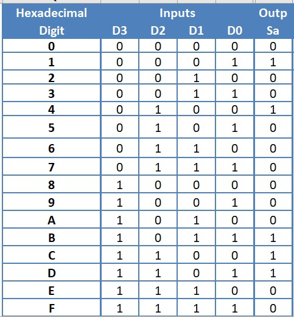
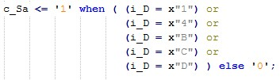
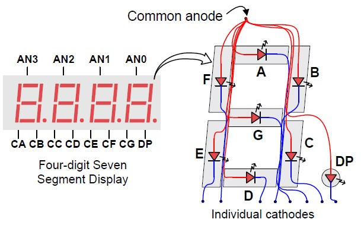
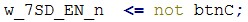

Lab 2 - Seven Segment Display Decoder
Contents
Lab 2 - Seven Segment Display Decoder#
Implement the seven-segment decoder in VHDL.
Now that you have Boolean equations established for each of your seven segment outputs, it is time to implement them in hardware with VHDL! Once you have written your seven-segment decoder (SSD) VHDL module, you will test it with a simulation test bench. The test bench allows you to simulate your design to see what outputs would be given inputs you define. This way, you can see if your design does what you expect before attempting to program your board. Then you will use your verified SSD component in a top level Basys3 component where you wire your decoder to a seven-segment display (7SD) and switches, along with connecting a button to the 7SD to enable it. Finally, you will test your implemented design in hardware.
Implement SSD component in VHDL#
VHDL templates#
You should have all templates loaded from Lab1 in your repository, but you can find the VHDL template files from the General Teams Channel under “Handouts and Resources”.
Save a copy of ECE_template.vhd as a file named sevenSegDecoder.vhd into your Lab2 code folder.
Save a copy of ECE_template_tb.vhd as a file named sevenSegDecoder_tb.vhd into your Lab2 code folder.
Add your sources to Vivado. Remember to leave “Copy sources into project” unchecked
Edit the file headers as needed.
Find and replace all instances of “ECE_template” with
sevenSegDecoderWithin Vivado, open one of your VHDL files and then type
CTRL+SHIFT+Ror click on Edit→Replace in FilesFill in the find and replace text boxes as required. Make sure to check all of the sources you want to change:

In the message area (bottom of Vivado screen) click “Replace All”

Create SSD Entity#
Create your interface (ports) for your sevenSegDecoder according to
Figure 3 below. Figure 3 shows the sevenSegDecoder module entity
interface in blue and the architecture in purple. Notice that the figure
indicates that the input, i_D, is a bus of 4 wires, and the output, o_S,
is a bus of 7 wires. This can be created in VHDL by using a
std_logic_vector signal type. For instance, i_D could be created in
the port statement with the following:
i_D : in std_logic_vector(3 downto 0)
Remember, the i_ follows the naming convention provided in the header
that indicates the signal is an input. The statement above 3 downto 0
indicates that BIT3 is the MSB and BIT0 is the LSB. You could easily
reverse this by swapping the locations of the two numbers.
To access each wire from the bus you created simply refer to the bit
number in parentheses. For instance, i_D(3) refers to the MSB of the
input, D.
 Figure 3: sevenSegDecoder entity and architecture
Figure 3: sevenSegDecoder entity and architecture
Create SSD Architecture#
After you have created your component interface, you need to describe
the architecture. Figure 3 on the previous page shows that the output of
the combinational logic produces a signal for each 7SD segment (c_Sa …
c_Sg). These combinational signals (denoted by the c_ at the
beginning) are wired to each bit of the output segment bus (o_S). The
bit numbers are labeled in the diagram. For instance, BIT0 of o_S is
wired to c_Sa.
For clarity, declare intermediate combinatorial signals (e.g.,
c_Sa) that break out outputSand set them to a default value of1(off). This should be done before begin.There are no PORT MAPS or PROCESSES needed for this module, so you can delete those sections.
In the CONCURRENT STATEMENTS section, map the output
Sto the signals you created above per Figure 3. For instance:
o_S(0) <= c_Sa;
Implement your prelab equations using behavioral modelling#
There are two basic philosophies for modelling digital architectures: structural and behavioral. A structural model means that you are describing how the module would be composed as a hierarchy of simpler modules. A behavioral model means that you are describing what the logic does in terms of inputs and outputs. We will be using behavioral modelling in this lab.
For instance, given the truth table below of inputs D3 down to D0 and output Sa, you could derive the simplified Boolean expression:
Table 2: Seven-Segment Decoder Truth Table with output Sa 
This could then be implemented behaviorally with the following VHDL code:
 {width=”5.322916666666667in”
height=”0.8020833333333334in”}
{width=”5.322916666666667in”
height=”0.8020833333333334in”}
Notice that the logic for the intermediate signal c_Sa is described in terms of AND, NOT, and OR gates. Also notice that the statement spans multiple lines and is ended by a semicolon. It is helpful to break statements like this into multiple lines so that they are easier to read. Each implicant from the simplified Boolean expression has its own line and is surrounded by parentheses (use SPACE to make it more readable).
There are many ways to describe a behavioral model, however. Contrast the above behavioral model with the following one:
{width=”3.6770833333333335in” height=”1.0520833333333333in”}
The behavioral model describes the logic just like the truth table. In this case, it essentially creates a lookup table (LUT) where the ‘1’s are identified, and everything else is ‘0’. Note, how using a std_logic_vector for i_D allows us to compare the input to a 4-bit hex value(denoted by the ‘x’) instead of comparing all of the individual bits. This is one of the advantages of using that signal type.
Now that you have an understanding of how to implement behavioral models in VHDL, implement all seven of your outputs.
Use behavioral modelling with AND, NOT, and OR gates for at least two of them, and use behavioral modelling with a LUT for at least two of them.
Which model method do you think is easier to use for implementing your outputs?
Implement the remaining outputs with your preferred choice.
2. CREATE SSD TESTBENCH AND SIMULATE
EDIT THE VHDL TEMPLATE#
a. You can find the VHDL template files from the General Teams Channel under “Handouts and Resources”..
b. If not already done, save a copy of ECE_template_tb.vhd as a file named sevenSegDecoder_tb.vhd into your Lab2 code folder. c. Edit the header as needed. d. If not already done, find and replace all instances of “ECE_template” with “sevenSegDecoder”.
e. Copy in the port information for your sevenSegDecoder componente
f. Declare a bus (std_logic_vector) or series of signals for the switch inputs.
g. Declare a signal vector to connect to the segment outputs (e.g., w_seg) from your component
h. Port map your component instance to the wires you creates for the switches and the 7SD segments
• The keyword OPEN can be used if you prefer to not wire a port to something (e.g., you will read or manipulate the ports directly in your simulation)
i. Create your test plan process. Remember, you can use hex values with
busses:  {width=”1.0479166666666666in”
height=”0.188082895888014in”} j. Fix any syntax errors, and run the
simulation.
{width=”1.0479166666666666in”
height=”0.188082895888014in”} j. Fix any syntax errors, and run the
simulation.
k. Inputs and outputs should already be grouped, but ensure the radix is set to hex. Make sure the signals are in the proper order so the hex values make sense. This makes verification easier. If you used a vector, they should be.
l. Make sure the simulation results match your Prelab truth table, and then include a waveform screenshot in your report. You may need to reverse the order to make your sim match (right click-> Reverse Bit Order).
3. CREATE TOP LEVEL VHDL FILE
The top level VHDL file is what connects your component to the Basys3 development board. Figure 5 below shows the top level schematic for this lab. As can be seen in the figure, you need to connect your SSD component to four physical switches (sw) and the seven cathodes (seg) of a seven-segment display (7SD). You also need to wire a push button (btnC) up so that it can be used to activate the 7SD by sending a low signal to the anode. You can see in Figure 4 that the anode determines which of the displays are on, while the cathodes allow you to turn on each individual segment.
{width=”4.039027777777778in” height=”2.626388888888889in”}
Figure 4 – seven segment display
Since the button itself is active-high, an inverter is required. The other 7SDs (display 3, 2, and 1) are disabled by connecting them to power. Use the provided top_basys3.vhd file for a jumpstart in implementing your top-level design. The entity is provided for you, but you must complete the architecture. Note, the entity interface has been designed so that the port names match exactly what the constraints file (Basys3_Master.xdc) is already using. You simply need to uncomment the lines in Basys3_Master.xdc that you need to use.
 {width=”7.490277777777778in”
height=”4.4430555555555555in”}
{width=”7.490277777777778in”
height=”4.4430555555555555in”}
Figure 5 – Top Level Schematic
The comments in the VHDL file provide a guide on what you need to do. Additionally, the code that connects the push buttons to the enable signals on the seven-segment displays has been done for you. Note, that when connecting an input to a wire, the input must be on the right side. For example, in the below statement, btnC is the input and w_7SD_EN_n is the wire connecting the button to the 7SD active-low enable pin:
{width=”1.99625in” height=”0.17708333333333334in”}
In code above, “<=” is an assignment statement and connects the button to a wire. On the other hand “=>” is used for case statements, array assignments, and component port mapping as seen below. That statement only connects the button to a wire. To connect the other end of the wire to the enable (anode) pin, you have to have a second statement:
 {width=”4.423611111111111in”
height=”0.1986111111111111in”}
{width=”4.423611111111111in”
height=”0.1986111111111111in”}
Note, in the above statement, the signal an is an output, so it must be on the left side. The right side is using the () aggregate operator to concatenate bus signals. The keyword “others” always refers to any bus signals that are not otherwise explicitly listed. Another way to describe the above connections is as follows:
 {width=”1.9275in”
height=”0.7638888888888888in”}
{width=”1.9275in”
height=”0.7638888888888888in”}
4. IMPLEMENT THE DESIGN IN HARDWARE
a. Take a look at the RTL schematic (In RTL Analysis in the Flow Navigator on the left side of the window).
Is this what you expect? Did vivado implement the circuit like you thought it would?
Double click on the sevenSegDecoder component. Did vivado implement the circuit like you thought it would? b. Generate the bitstream (.bit) file and download it to your FPGA.
Do not forget to commit the .bit file to your Git repo.
The default location of the file should be: Lab2\Lab2.runs\impl_1\top_basys3.bit c. Verify that your design functions correctly.
You have to hold the center push button down for a 7SD to show your output.
The correct hex digit is shown based on the switch positions for all input possibilities.
d. Demo the working final product to your instructor.
V. LAB 2 DELIVERABLES#
Table 3 below shows how the points will be distributed for this assignment. Details for how each item will be scored follows. Table 3: Point distribution for Lab 2
Item Out of
Prelab 15
Hardware demo 30
Report 30
Files 20
Git usage 5
Total 100#
(30 PTS) HARDWARE DEMO (BY 1700 ON T17)#
You have to hold the center push button down for a 7SD to show your output. (10 pts) • The correct hex digit is shown based on the switch positions for all input possibilities. (20 pts)
Demo can be performed live with an instructor (preferred) OR submitted via Teams. o If via Teams, refer to your instructor for instructions.
(30 PTS) REPORT (SUBMITTED VIA GRADESCOPE BY 1700 ON T17) (10 PTS) REPORT QUALITY (TEMPLATE PROVIDED)#
Rating Points Quality
Excellent 9-10 Report is well laid out and follows provided template. All schematics are digitally generated or NEATLY hand drawn. All figures, tables, and pictures are referenced and discussed in the report. The flow of the lab should communicate the student understands what the lab was accomplishing and should describe their process from beginning to end. All schematics and other designs are updated to reflect the final product.
Good 6-8 Report follows the structure dictated below. Most schematics are digitally generated or NEATLY hand drawn. Most figures and tables are referenced and discussed in the report. The flow of the lab indicates the student understands what the lab was accomplishing and loosely describes their process from beginning to end. Most schematics and other designs are updated to reflect the final product.
Acceptable 3-5 All the major sections dictated below are present but there is little flow to the document. The different sections are dropped in with little discussion. Figures, tables, and pictures are present, but have little discussion. It is hard to tell what thought process the students used when developing their solution. Schematics and other designs are present, but may not have been updated to reflect the final design or may be of poor quality.
Unacceptable 0-2 Lab is incomplete. Sections are completely missing or have little to no discussion. Figures, tables, and pictures are present but have little to no discussion. The student did not communicate their thought process and it is not clear how they developed their solution. Schematics and other aspects of the design were not updated at all to reflect errors or changes from the preliminary design.#
Report file includes the following content (template will be provided):
Title and Author
[Documentation statement]{.underline} Be specific here. You are allowed to help each other but you must not copy code or write code for other students. You do not need to document work with your partner.
Purpose of the exercise
Prelab (majority of grade in prelab) or preliminary design work o Include anything that helped you develop your software (algorithms or flow charts) o Schematics (created or used,)
Design/Testing/Debugging methodology. Use this section to detail how you designed your final solution and what steps you took to test it at it was being built. Include anything important for the reader to understand about your final design. At a minimum you need to explain anything that is different from you preliminary design and why you had to change it. Describe problems you encountered while working on this exercise and how you fixed them. Some people make numbered lists to keep track of their issues. This section should always be open and being edited while you are working on a lab or Homework.
Be sure to document any issues (and solutions) you run into while doing this lab. Remembering past mistakes may help you in the future!
Results: o Simulation Results. Present and discuss your simulation results. Does your lab do what it is supposed to?
Final Results/Demonstration. Discuss your final results here. Do they make sense? If not given in person, your demo should be here. Answer any remaining lab questions here if not answered throughout report.
Observations and Conclusions What did you learn in this lab? Did anything cool catch your eye?
Reflection o Number of hours spent on Lab2: ________ o What portion of the lab was the most difficult for you? How did you overcome it? o What lessons, previous assignments, or activities did you find helpful is completing this lab?
What suggestions do you have for improving Lab2 in future years? Be specific. Ex: “The instructions were confusing” does not help. What parts of the instructions were confusing
(20 PTS) SIMULATION RESULTS WAVEFORM
• Clearly shows that that all possible inputs and outputs match the correct Prelab truth table. (16 pts) • Signals are named and grouped per instructions. (4pts)
(20 PTS) FILES (SUBMITTED VIA GIT BY 1700 ON T17)#
+———–+—–+—————————————————-+ | * | > * | Quality | | Rating* | Po | | | | int | | | | s* | | +===========+=====+====================================================+ | Ex | > | All required files are included in the “Code” | | cellent | 17 | folder of the repository. Each file includes an | | | -20 | updated header with accurate filename, author, | | | | creation date, description, and documentation. | | | | Each entity has a name that matches the file name. | | | | Entity inputs and outputs match provided/designed | | | | schematics. Variables have descriptive names that | | | | meet the naming | | | | | | | | conventions. Code is commented throughout | | | | providing concise descriptions of what is | | | | occurring (not every line needs to be commented, | | | | but generally blocks of code should be). There are | | | | no extraneous comments or code. | | | | Spacing/indentation is clear and organized. | +———–+—–+—————————————————-+ | Good | > | All required “.vhd” files are included in the | | | 13 | “Code” folder of the repository. Each file | | | -16 | includes an updated header with author. Each | | | | entity has a name, inputs, and outputs that match | | | | provided/designed schematics. Variables meet the | | | | naming conventions. There are no extraneous | | | | comments or code. | +———–+—–+—————————————————-+ | Acc | > 9 | All required files are included in the repository. | | eptable | -12 | Each entity has a name that matches the | | | | provided/designed schematics. Variables meet the | | | | naming conventions. | +———–+—–+—————————————————-+ | Unacc | > | Files were not included. Header was not updated. | | eptable | 0-8 | Extraneous comments exist. Variables do not meet | | | | naming conventions. No helpful comments. | +———–+—–+—————————————————-+
sevenSegDecoder.vhd, sevenSegDecoder_tb.vhd, and top_basys3.vhd included in code folder o Fill out headers as appropriate o Remove extraneous code and comments
Basys3_Master.xdc file included in code folder
Bitstream (.bit) file used for hardware demo in repo (likely at Lab2\Lab2.runs\impl_1\top_basys3.bit)
(5 PTS) GIT USAGE#
Commit messages begin with “Lab2 - ” to easily distinguish between course projects (2.5 pts)
Repo file structure makes sense and is easy to navigate (2.5 pts)